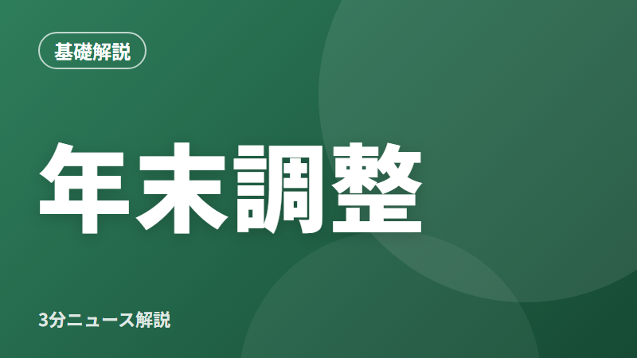

年末調整ってなに？会社員が知っておきたい仕組みと書類のポイント
文字

3行まとめ
- 年末調整は、1年間に給料から天引きされた所得税を、会社が正しく計算し直す手続き
- 払いすぎていれば戻り、足りなければ追加で引かれる
- 家族や保険料の情報を書類に正しく書くことで、税金が正しく計算される
年末調整ってなに？
会社員の給料からは、毎月「源泉徴収」として所得税が天引きされています。ただ、この毎月の金額はあくまで見込みで計算されたものです。
そこで1年の終わりに、会社がその人の1年分の給料や家族の状況などをもとに税金を計算し直し、天引きした合計との差を精算します。これが「年末調整」です。
- 払いすぎていた → 差額が戻ってくる（多くは12月か1月の給料と一緒に）
- 足りなかった → 差額が追加で引かれる
なぜ差が出るの？
毎月の天引きの時点では、年の途中で結婚した、子どもが生まれた、生命保険に入った、といった事情が反映されていないことがあります。こうした事情は、税金を減らす「控除」につながるため、年末調整の書類で会社に伝える必要があります。
また、2026年分のように税金のルールが年の途中で変わった場合も、その差額が年末調整でまとめて精算されます。
書類でチェックしたいポイント
- 扶養している家族：配偶者や子ども、親など。家族の年収によって扱いが変わる
- 保険料：生命保険・地震保険などの控除証明書を添付する
- 住宅ローン：住宅ローン控除の2年目以降は、年末調整で手続きできる
なお、医療費控除やふるさと納税（ワンストップ特例を使わない場合）などは、年末調整ではなく確定申告が必要です。
私たちの生活への影響は？
出し忘れに注意
書類を出し忘れたり、控除の書き漏れがあったりすると、本来戻るはずの税金が戻らないことがあります。その場合でも、あとから確定申告で取り戻せることがあります。
まとめ
年末調整は「1年分の税金の答え合わせ」です。会社から書類が届いたら、家族や保険の情報を確認して、早めに提出しましょう。詳しくは国税庁のホームページで確認できます。
出典
この記事はAIの補助を受けて作成し、上記の出典で内容を確認しています。投資やローンの判断はご自身でお願いします。誤りに気づいた方はお問い合わせからお知らせください。
この記事のテーマ#税金・家計